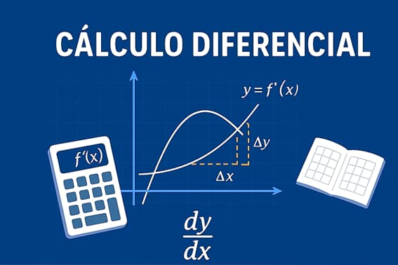
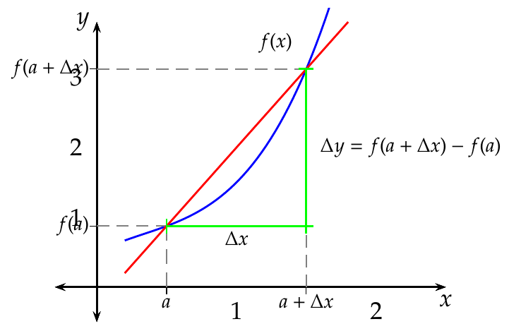
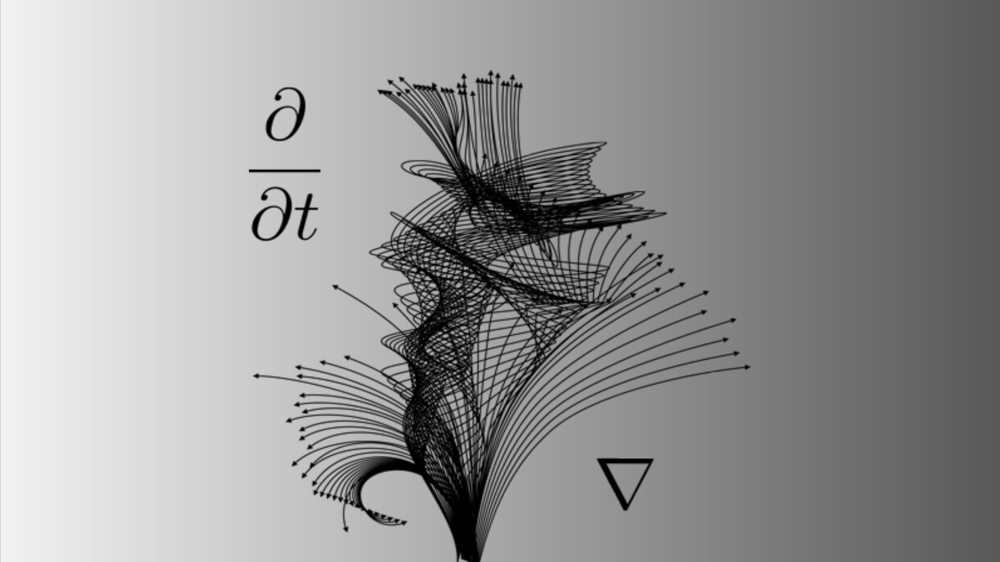

Temario
- Álgebra.
- Números reales.
- Desigualdades líneales y de segundo grado.
- Funciones.
- Gráfica de funciones polinomiales.
- Evaluación de funciones.
- Operaciones con funciones.
- Funciones trigonométricas.
- Función exponencial y logarítmica.
- Funciones de varias reglas de correspondencia.
- Límites.
- Continuidad en funciones dadas por una sola regla de correspondencia y por varias reglas.
- Derivada.
Galería



Video-clase destacada
Material de apoyo
Aquí podrás agregar apuntes, guías, tareas,
ejercicios resueltos y exámenes.
Avisos importantes
- 📌 Entrega de tareas todos los viernes.
- 📌 Revisar material antes de cada clase.
- 📌 Consultar dudas mediante correo electrónico.